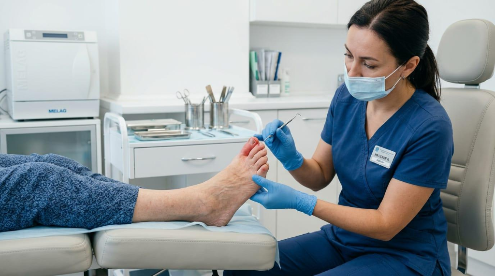
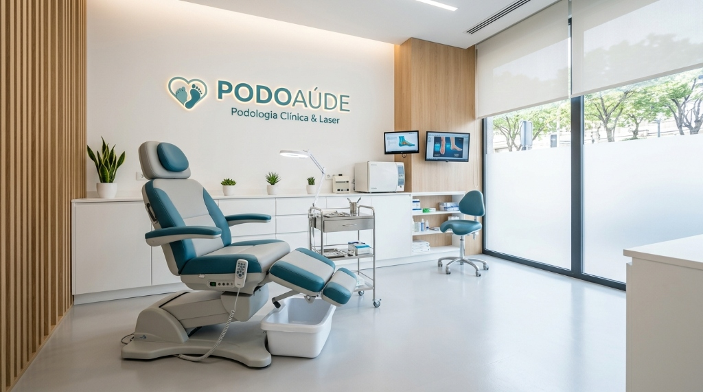
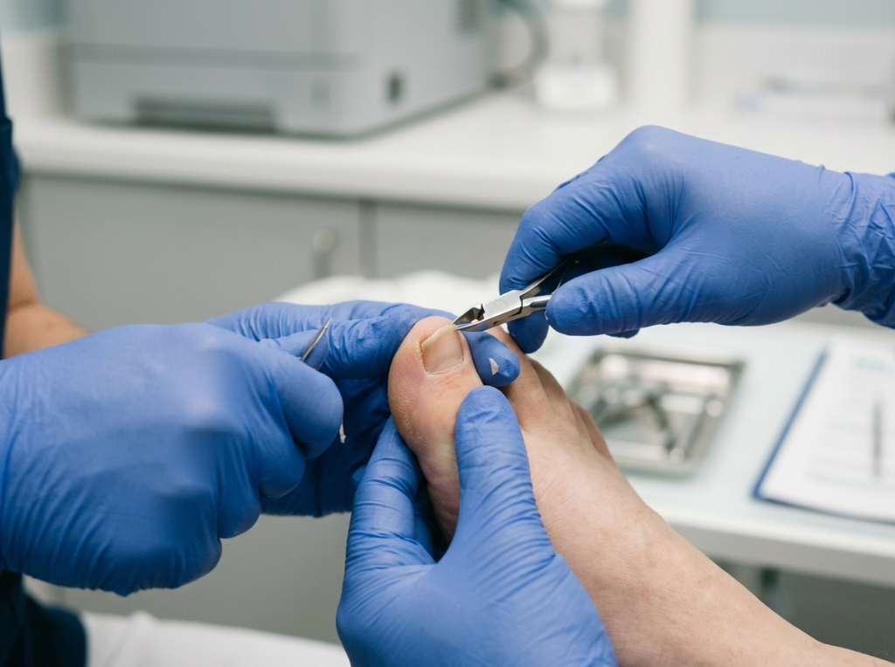
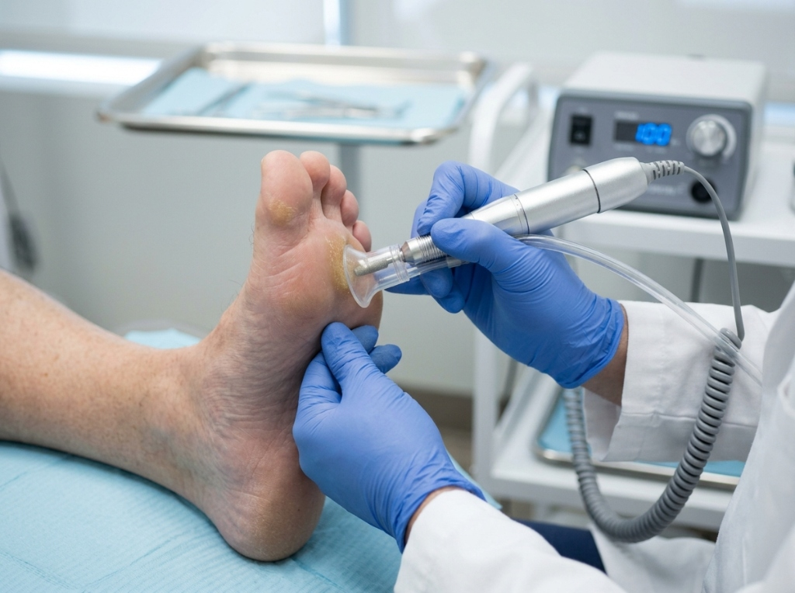
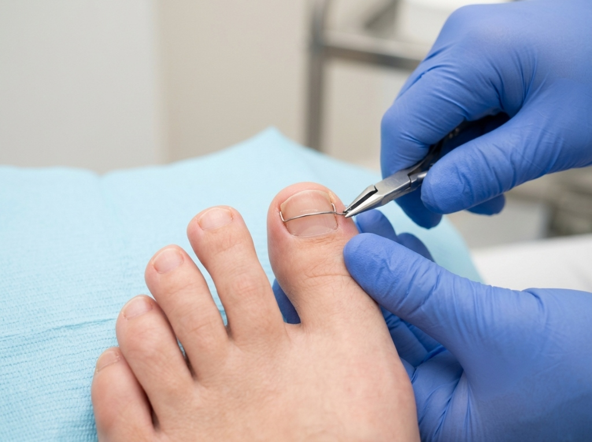
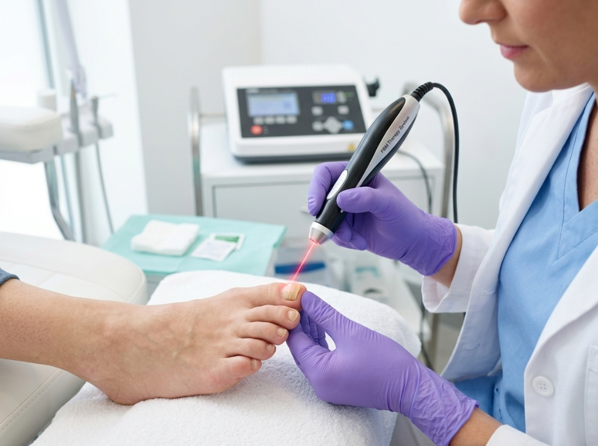
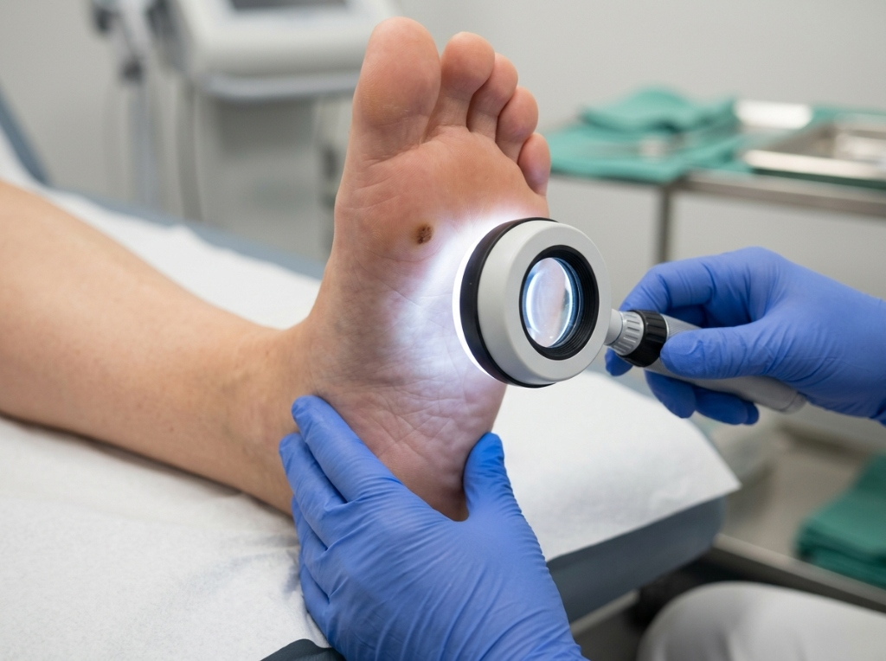
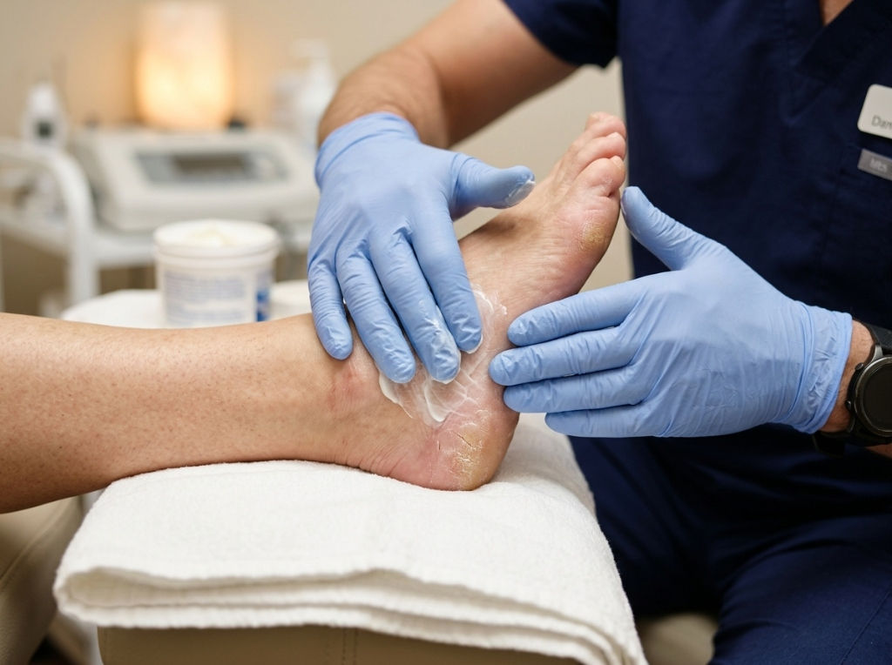
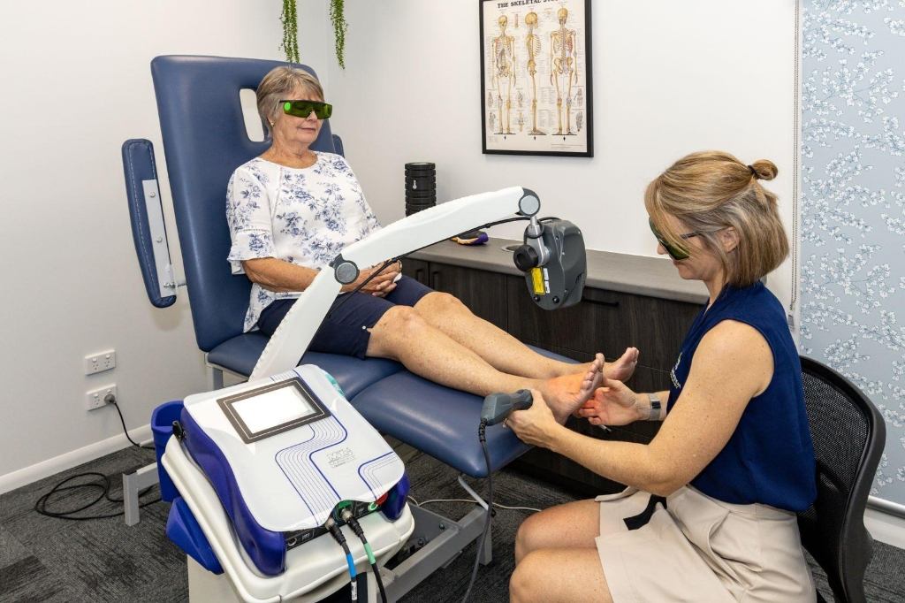

Saúde, conforto e bem-estar para caminhar melhor.
Na PODOSAÚDE, você encontra atendimento especializado em podologia clínica, prevenção e tratamentos para diferentes necessidades dos pés, com técnicas modernas e tecnologia a laser.

Tratamentos personalizados para diferentes necessidades.
Avaliação e cuidados especializados para a saúde dos pés.
Atendimento especializado para casos de unhas encravadas e alterações ungueais.
Tratamento e prevenção de desconfortos causados por pressão e atrito.
Cuidados podológicos e acompanhamento para alterações nas unhas.
Cuidados preventivos e acompanhamento especializado para pessoas com diabetes.
Tecnologias a laser aplicadas aos tratamentos podológicos conforme avaliação.
Na PODOSAÚDE, acreditamos que cuidar dos pés é cuidar da qualidade de vida.
Oferecemos atendimento especializado em podologia clínica, com foco em prevenção, conforto, higiene e cuidados personalizados para cada paciente.

Abordagens seguras, preventivas e com tecnologia avançada.

Alívio Rápido
Conforto
Órteses
Laserterapia
Inspeção
Hidratação
Tecnologia a favor do cuidado
A tecnologia a laser pode ser utilizada como parte dos protocolos de atendimento, conforme avaliação profissional.
Profissionais dedicados e atualizados em podologia clínica e cuidados especializados.
Especialista em Podologia Clínica
Especialista em Podologia Clínica
Preencha seus dados para solicitar seu horário ou fale direto pelo WhatsApp.
A experiência de quem confia no nosso cuidado clínico.
"Espaço para depoimento de paciente. Conte aqui como foi sua experiência com o atendimento e o cuidado recebido na clínica."
"Espaço para depoimento de paciente. Conte aqui como foi sua experiência com o atendimento e o cuidado recebido na clínica."
"Espaço para depoimento de paciente. Conte aqui como foi sua experiência com o atendimento e o cuidado recebido na clínica."
Tratamento podológico especializado, indolor e com esterilização em autoclave hospitalar.
Consultório moderno, seguro e de fácil acesso na região nobre de São Paulo (Av. Paulista), a 250m do Metrô Trianon-Masp e com estacionamento conveniado.
Agende sua avaliação na PODOSAÚDE e conheça um atendimento pensado para suas necessidades.